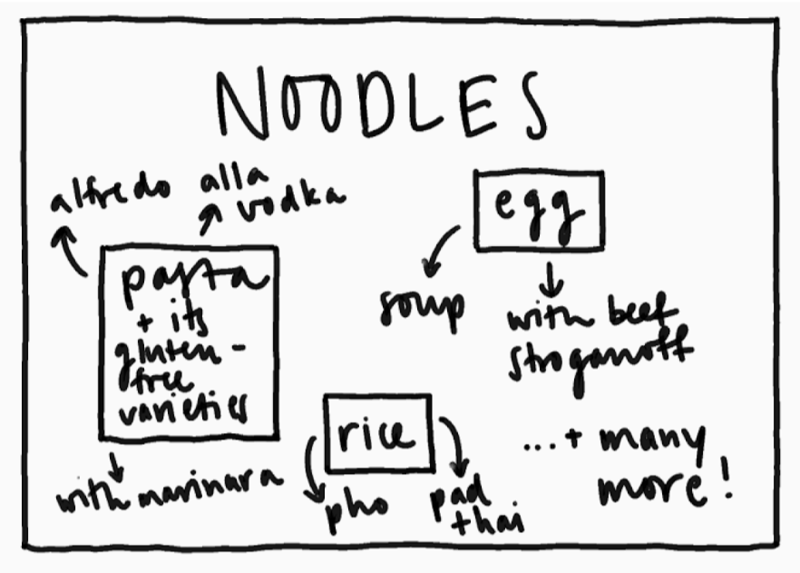

E-mail: soupthereitis.info [at] gmail [dot] com
Atlanta, GA, USA
Last Update: 8 January 2024
8 January 2024
A Brief Look at the Adapted Soups by Nina
Short Bio:
This week, we are excited to have a guest review from independent soup journalist
Nina D. Nina is a highly-regarded freelance soup reviewer, and it took every penny
from Soup! There It Is budget to get her to do this review. She will be leading us
head first to the avant-garde world of adapted soups, which are NOT PASTA.
A lot of people think TikTok is no good. Those people are (a) no fun and (b) completely
ignoring the fact that I found a great recipe for adapted chicken noodle soup
on there. You may ask, What's adapted chicken noodle soup? Well I'll tell ya- this recipe has
the same ingredients as a C.N.S., but the broth is reduced and with a touch of cream,
it becomes a glorious sauce for the noodles, chicken, and vegetables.
It's at this point that you might challenge me as S!TII's co-founder, Peter Addison,
did when he said, “Our readers will be especially interested in an analysis
of how adapted soup and pasta are different.” Challenge accepted. It's very simple,
really: egg noodle (the star of this adapted soup) is not pasta, it's a noodle.
According to the National Pasta Association (a real thing), egg noodles are not pasta,
because they do not contain durum flour and the egg content is higher than acceptable
to be classified as pasta. Please refer to the diagram below for any further questions.

Now that we got that out of the way… this adapted soup is just wonderful.
Because the noodles don't get soggy like in traditional soup, you can keep this
in the fridge or pack it for lunch and still experience the same quality and texture
as the night you made it. It's filling, has all the major food groups, and is easy
to make. I'd like to close with these words from my roommate & taste tester
correspondent, Maryellen Hauver, who put it simply and beautifully, "It hits."
Verdict: 9.5/10
Send a comment: